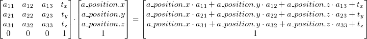
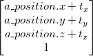
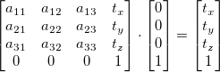
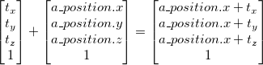
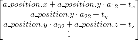
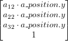
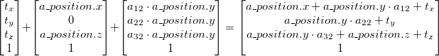

The car consist of multiple parts (body, moving triangle on top, spotlight) where the triangle rotates independently on top of it. Furthermore the crab moves around the stone, relative to the stones position of course.
We used transparent textures on our billboards and also implemented transparent sorting, to render transparent objects in correct order, depending on the camera position.
The camera can be controlled after the movie or by pressing the C key. See user manual for details.
The following idea is inspired by a YouTube tutorial series on OpenGL Water by the user ThinMatrix.
We decided to render the reflection and refraction effects. Reflection means the reflected rays from above the water and refraction means the view below the waters surface, i.e. towards the waters ground.
In order to get a correct reflection and refraction effect several steps need to be performed in succession:
We need to render the whole scene three times: Water reflection, refraction and the normal viewport rendering. We use FPOs (Frame Buffer Objects) to perform the first two rendering steps. We attached color textures to the FPOs, which serve as a destination for all the pixels that will be rendered to this framebuffer. To reduce the cost of this additional rendering steps we reduce the resolution of those two resulting scenes (at the moment to a quarter of the viewports dimensions) and we also clip away unused objects in the scene. This means, if we render the reflection we clip everything what is below the water level. And on refraction rendering we clip everything that's above water level.
To render the whole scene not to the screen, but to a framebuffer, we need to first bind the framebuffer to the created framebuffer. To render to the screen again, one hast to unbind the framebuffer again.
gl.bindFramebuffer(gl.FRAMEBUFFER, reflectionFrameBuf);
// render to framebuffer
gl.bindFramebuffer(gl.FRAMEBUFFER, null);
// render to screen
Refraction is rendered with the same camera as usual, expect we clip everything above the water.
Reflection is rendered with a camera, that is shifted down by twice the current distance between the camera and the water level and an inverted pitch to look up.
These clipping steps are necessary for simplification and to avoid unwanted artifacts. If we would render the reflection texture from below without clipping objects underneath the water, we would also see objects, which are inside the water to be rendered. Obviously, the should clearly not be rendered for a reflection.
Because WebGL, in contrast to OpenGL, doesn't support clipping easily by enabling a flag and supplying a clipping plane, we needed to do this by hand in the fragment shader. We just need clipping based on y-coordinates, therefore we first calculate the resulting y-coordinate of a vertex in world space to a varying called varying float v_verticalPosition:
v_verticalPosition = (u_invView * eyePosition).y;
In the fragment shader, we discard fragments which have a y-component (v_verticalPosition) below or above the defined clipping "plane". In this case a two-dimensional vector uniform u_simpleClipPlane stores two information. The first (x) component decides whether we clip above the desired y-value or below. The second (y) component supplies this clipping breakpoint on the y-axis.
if (u_enableClipPlane) if (u_simpleClipPlane.x > 0.0 ? v_verticalPosition < u_simpleClipPlane.y : v_verticalPosition > u_simpleClipPlane.y) discard;
In order to understand the upcoming coordinate space conversion, it is crucial to know the transformation pipeline stages and the transformation matrices in between. More on this topic is explained in the introduction of this raycasting tutorial by Anton Gerdelan.
Now that we got our reflection and refraction textures we need to paint them onto the water's surface. For this we use projective texture mapping. We got a texture of our scene in a framebuffer and want to map it exactly onto the water plane in our screen scene. So for any given fragment we are coloring in the fragment shader, we want to color it with the equivalent color of the pixel in the framebuffer texture at this position. So we need the fragments position in normal device coordinates and lookup the texture pixel at this position. To get the normal device coordinates, we first need to pass the gl_Position output from the vertex shader over to the fragment shader:
v_clipSpace = u_projection * eyePosition;
gl_Position = v_clipSpace;
As usual, we apply the projection matrix to the vertex point in eye space to get to clip space. We pass this information as a varying v_clipSpace to the fragment shader. Inside the fragment shader, we only need perspective division to get from clip space to normal device coordinates:
vec2 normalDeviceCoords = v_clipSpace.xy / v_clipSpace.w;
Now we know the NDC (normal device coordinates) for each fragment we want to shade. NDC range from -1.0 to 1.0. Texture coordinates range from 0.0 to 1.0. Therefore we need to convert these coordinates:
vec2 texCoords = normalDeviceCoords / 2.0 + 0.5;
With this coordinates, we can lookup the the pixel colors in our framebuffer textures. For refraction this works straight forward. For reflaction we need to flip the texture before (because we would like to have the reflection). We can achive this by using 1.0 - texCoords.y as new y coordinate for the reflection texture lookup.
To make the water more interesting we try to imitate wave movements. For this to work, we don't want to assign always the same color which we looked up in the texture but sometimes use neighbouring pixels. A common approach to achieve this result in a nice looking way is to use a third texture (a du/dv map) which determines small offset values for our texture lookup. That means, for each fragment we first lookup a color value inside the du/dv map. This value consist only of red and green components to mimic two offset channels. We use these values, divide them by some constant to keep the offset value small and lookup the final color for the reflection texture with these offset values in x and y direction.
// distort the lookup position
reflectCoords.x = clamp(reflectCoords.x + distortWave.x, 0.0, 1.0);
reflectCoords.y = clamp(reflectCoords.y + distortWave.y, 0.0, 1.0);
refractCoords.x = clamp(refractCoords.x + distortWave.x, 0.0, 1.0);
refractCoords.y = clamp(refractCoords.y + distortWave.y, 0.0, 1.0);
// map the projected texture
vec4 reflectColor = texture2D(u_reflectTex, reflectCoords);
vec4 refractColor = texture2D(u_refractTex, refractCoords);
For even more distortion we lookup the distortion offset values two times. The result of the first lookup is used on the same texture for a second lookup. The values also need to be scaled, so they can be even negative.
vec2 distort = (texture2D(u_dudvTex, vec2(v_texCoord.x + u_waveOffset, v_texCoord.y).xy * 2.0 - 1.0).rg) * 0.05;
vec2 distortWave = (texture2D(u_dudvTex, vec2(v_texCoord.x + distort.x, v_texCoord.y - distort.y).xy * 2.0 - 1.0).rg) * 0.01;
As a last minor step we want to decide/mix the reflection and refraction texture based on the current camera position. If the camera looks straight down into the water, one should mostly see into the water without any reflection. However if you look at the water from a low angle, the water should be very reflective.
For this to work, we first need to pass the current camera position as a uniform to the vertex shader. After that, we calculate the dot product of the waters plane normal vector and the vector reaching from the camera to the current vertex point.
v_cameraVec = normalize(u_cameraPos - (u_invView * eyePosition.xyz));
In the fragment shader we use this vector to calculate the dot product and mix the two texture colors accordingly:
// calculate fresnel factor and make water a bit overreflective
float fresnel = dot(normalize(v_cameraVec), vec3(0., 1., 0.));
fresnel = pow(fresnel, 3.0);
Billboards are 2D-Objects that always face the camera. In our project, we used them to render trees and grass on the island. The billboard itself is a simple 2D-square with a semi-transparent texture with a picture of a tree or grass. Everything that is not part of the tree/grass is transparent.
In order to let the billboard always face the camera, we modified the vertex shader.
In an ordinary vertex shader, we use the following code to determine the position of every vertex:
gl_Position = u_projection * u_modelView * vec4(a_position,1);
The world coordinates of the vertex (a_position) are first multiplied with the model-view matrix and then the projection is applied (by multiplying the result with the projection matrix).
After multiplying the vertex coordinates vector with the model-view matrix, we get a result that looks like this:

The 3x3 sub-matrix in the upper left corner of the model-view matrix contains all transformations like rotations, scales and shears and the vector in the 4th column of the matrix contains the translations. For the billboard effect, we need to get rid of all the transformations - the square mustn't be rotated or scaled in any way. No matter where the camera is, the billboard always needs to look the same. However, we need to preserve the translations because otherwise we couldn't move the billboards anywhere (we want them to be in arbitrary positions). So we want our resulting vector to look like this:

We can achieve this by multiplying the model-view matrix with a special vector...

...and then adding the a_position vector

The projection matrix is added as usual and we have a perfect billboard that always faces the camera.
gl_Position = u_projection * (u_modelView * vec4(0.0,0.0,0.0,1.0) + vec4(a_position.x, a_position.y, a_position.z, 0.0));
However, there is a problem with the above solution. Our billboards always face the camera, no matter how much it is rotated. That means, when we rotated our camera in y-direction so that the camera is facing the ground, the billboard still looks at the camera. Since we used the billboards for trees, we will have a tree that is lying on the floor. The idea is to preserve only the rotations, scales, etc. that affect the y-axis. This way, the tree will always stand on the ground. We want to have a result vector that looks like this:

In order to preserve the y-transformations, we multiply the 2nd column of the model-view matrix with the y-coordinate of the a_position vector:
vec4 rotationY = u_modelView[1] * a_position.y;
This gives us the following vector:

Now we can use additions to build the vector we need:

gl_Position = u_projection * (u_modelView * vec4(0.0,0.0,0.0,1.0) + vec4(a_position.x, 0.0, a_position.z, 0.0) + rotationY);